A Complete Beginner`s Guide to Django -- Other parts of principle
上一节详细讲解了 Models 的来源、构建、用法，这是 Fundamentals 的第二部分，讲述 Views、Templates and Admin 。
View
在第一篇教程中我们已经有了一个视图，这个视图在我们的应用程序主页显示如下
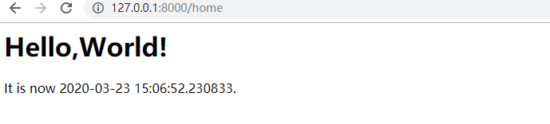
路由实现代码如下1
2
3
4
5
6
7
8
9
10
11
12
13myproject/urls.py
from django.contrib import admin
from django.urls import path
# 从 boards APP 中导入 views
from boards import views
urlpatterns = [
path('admin/', admin.site.urls),
# 调用views.home
path('home',views.home,name='home'),
]
视图实现代码如下1
2
3
4
5
6
7
8
9
10
11
12
13boards/views.py
from django.shortcuts import render
# 导入 HttpResponse 对象 由 DJango 自动创建
from django.http import HttpResponse
# 导入时间模块
import datetime
# Create your views here.
def home(request):
now = datetime.datetime.now()
html = "<html><body> <h1>Hello,World!</h1> It is now %s.</body></html>" % now
return HttpResponse(html)
但是这并不是我们的最终效果，如果你想起来在第二篇文章中的 Wirdframe ，它就是我们需要完成的首页效果图。
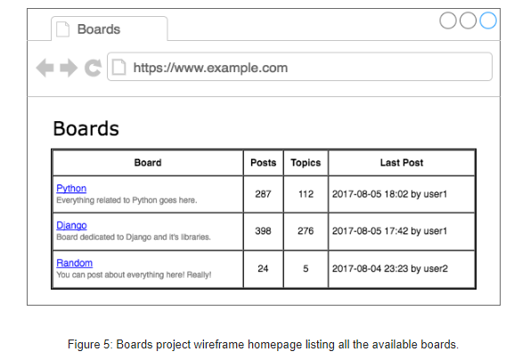
因为路由我们已经配置好了，现在需要做的就是如何将我们的所有主题都拼接成 HTML 结构然后传递给前端即可。
1 | from django.shortcuts import render |
这是非常重要的一个开始，如何将数据库的数据读取出来在前端页面上进行展示。因为后续的其他操作都是对这个过程的不断重复
- Teamplate 部分：美化前端页面，让读取出来的数据可以嵌入到更美观的 HTML
- View 部分：如何构建更加符合需求的 Mysql 语句让查询到的数据更方便的进行展示
- Models 部分： 如何构建外键，让其对前端的操作可以及时的记录反馈并存储到数据库中
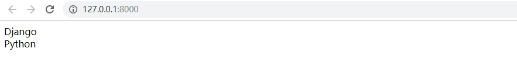
当然，我们在真正的项目里是不会去这样子渲染 HTML。因为我们在 MTV 模型中就提到了我们非常重要的一部分 Teamplates ，其作用就是将 View 函数中传递过去的数据使用 Django 的语法进行渲染，在 HTML 中展示出来。
Teamplates
在与 boards 同目录下的 templates 下创建名为 home.html 的 HTML 文件。1
2
3
4
5
6
7
8
9
10
11
12
13
14
15templates\home.html
<!DOCTYPE html>
<html lang="en">
<head>
<meta charset="UTF-8">
<title>Boards</title>
</head>
<body>
<h1>Boards</h1>
{% for board in boards %}
{{ board.name }} <br>
{% endfor %}
</body>
</html>
我们仔细查看下这部分的代码,我们混入了原始 HTML 和一些特殊标签 {% for ... in ... %} 和 。它们是 Django 模板语言的一部分。上面的例子展示了如何使用 for 遍历列表对象。 会在 HTML 模板中会被渲染成版块的名称，最后生成动态 HTML 文档。
而在 Views.py 中，我们是才有先从数据库读取数据，然后遍历添加到列表，最后通过 HTTPResponse 直接传递到前端。
1 | {% for board in boards %} |
好的，了解了如何在 HTML 插入数据了，现在我们需要返回上一步编辑我们的 View 函数，将传入的数据进行修改。这里我们改变了之前的写法，调用了一个新的函数 render。
1 | boards/views.py |
下面就是我们的首页的效果
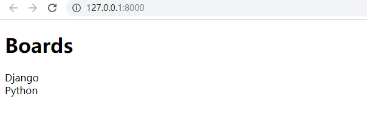
这个页面的效果不是很好看 ，所以我们来改进下 HTML 的布局
1 | templates/home.html |
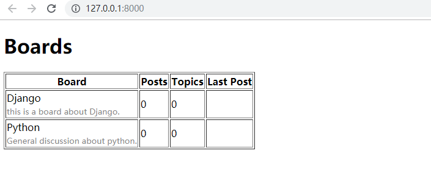
看起来距离我们的最终效果不远了。
Static Files Setup
静态文件是指 CSS,JavaScript,字体，图片或者是用来组成用户界面的任何其他资源。Django 提供了一些功能来帮助我们管理静态文件。这些功能可在 INSTALLED_APPS 的 django.contrib.staticfiles 应用程序中找到。
市面上很多优秀前端组件框架，我们都可以拿来使用渲染我们的 HTML 文件。在项目的根目录下创建一个 static 的新文件夹，转到 getbootstaro.com 下载框架文件，并将其放在 static 文件夹下。1
2
3
4
5
6
7|-- myproject/
| |-- boards/
| |-- myproject/
| |-- templates/
| |-- static/
| | +-- css/
| | +-- bootstrap.min.css
下一步是告诉 Django 在哪里可以找到静态文件。打开设置文件，拉到文件的地步，在 STATIC_URL 后面添加一下内容1
2
3
4
5
6myproject/settings.py
STATIC_URL = '/static/'
STATICFILES_DIRS =[
os.path.join(BASE_DIR,'static')
]
现在我们必须在 HTMl 文件中加载静态文件
1 | templates/home.html |
首先，我们在模板的开头使用了 Static Files APP 模板标签 {% load static%} 。模板标签 {% static %} 用于构成资源文件完整 URL。在这种情况下， {% static 'css/bootstrap-grid.css' %} 将返回 /static/css/bootstrap-grid.css 相当于 http://127.0.0.1:8000/static/css/bootstrap-grid.css。
{% static %}模板标签使⽤ settings.py⽂件中的 STATIC_URL 配置来组成最终的URL，例如，如果您将静态⽂件托管在像 https://static.example.com/ 这样的⼦域中 ，那么我们将设置 STATIC_URL= https://static.example.com/ ，然后 {% static 'css/bootstrap.min.css' %} 返回的是 https://static.example.com/css/bootstrap.min.css。 现在我们需要编辑 HTML，以利用 Bootstrap CSS1 | {% load static %} |
这里不对使用 Bootstrap 的方法进行深究，如果可以的话会有专门针对 Bootstrap 的教程。
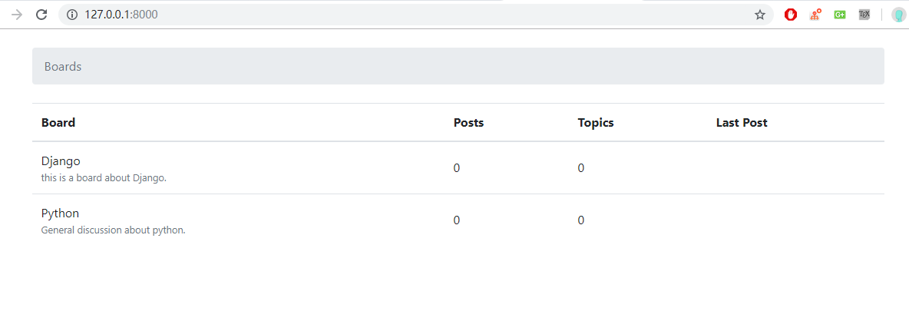
Admin
现在，我们使用 Python manage.py shell 添加用户模块。
当我们开始一个新项目时，Django 已经配置了 Django Admin ，我们可以在 settings.py 的INSTALLED_APPS查找到对于的 APP。使用 DJango Admin 的一个很好的例子就是用在博客中；它可以被作者用来编写和发布文章。另一个例子是电子商务网站，工作人员可以创建，编辑，删除产品。现在我们将配置 Django Admin 来维护我们应用程序的版块。
我们首先创建一个管理员账户：python manage.py createsuperuser 。按照说明操作1
2
3
4
5
6(base)myproject>python manage.py createsuperuser
用户名 (leave blank to use 'afrunk'): admin
电子邮件地址: admin@example.com
Password:
Password (again):
Superuser created successfully.
创建完成之后我们可以在浏览器打开该 URL : 用户登录
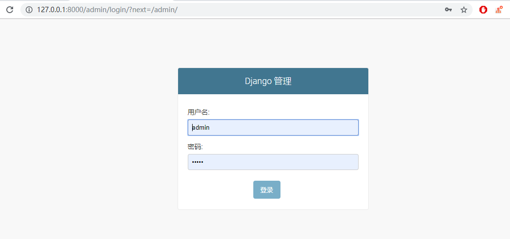
输入用户名和密码登录到管理界面
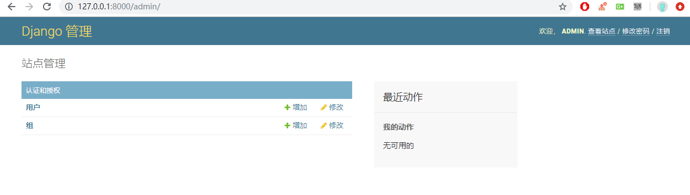
它已经配置了一些功能，在这里我们可以添加用户和组的权限管理，这些概念在后面我们将讨论更多。
为了能够将用户和我们的功能都联系起来，我们需要在 Board 的 admin.py 文件下添加一下代码
1 | boards/admin.py |
保存 admin.py 文件，然后刷新网页浏览器的页面，可以观察到 Boards 的模型已经被添加进来
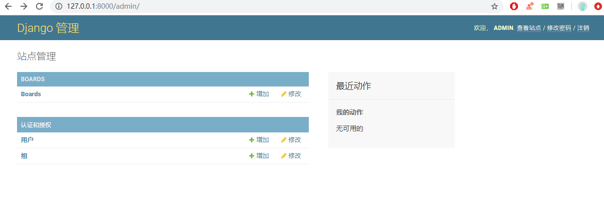
点击 Boards 链接查看现有主题列表，这些主题是我们之前教程中操作插入数据库的信息
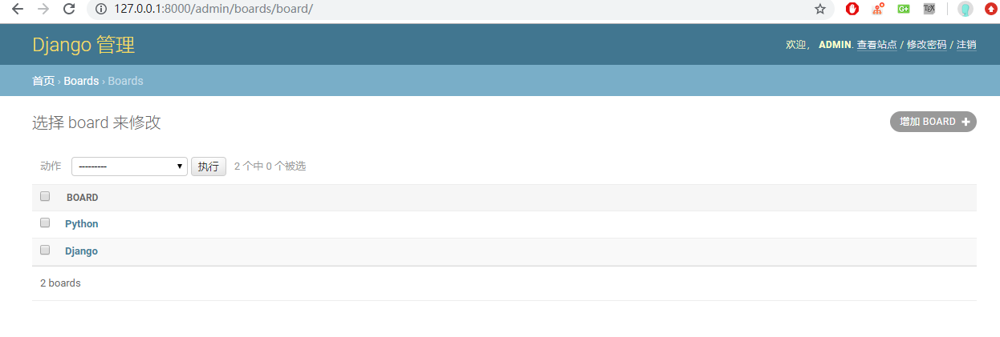
我们可以通过点击添加 Board 按钮添加一个新的板块：
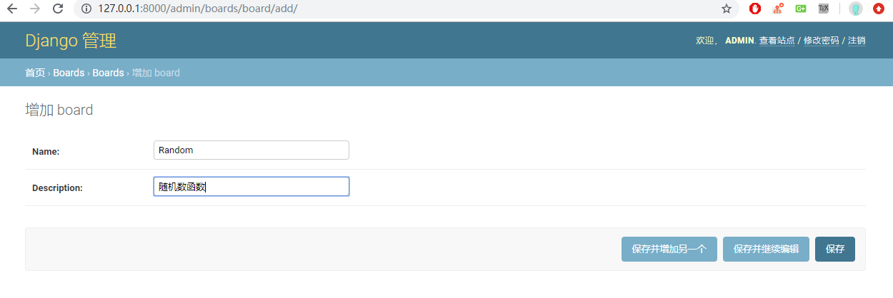
点击保存按钮
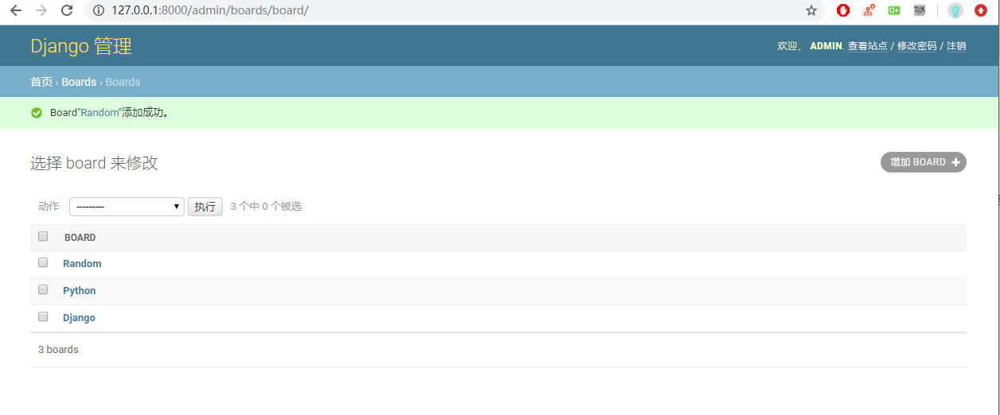
返回首页查看是否一切正常
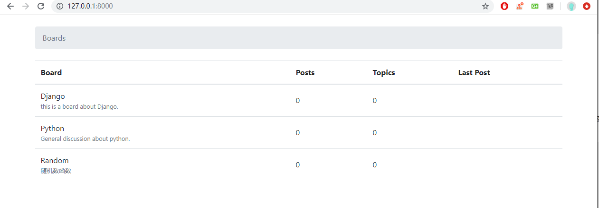
Conclusions
- Views 方面讲述了如何通过 QuerySet 的方法获取数据库的数据，然后通过 render() 传递到 HTML 文件中
- Teamplates 如何将 Views 中传过来的数据在 HTMl 中进行使用
- Static Files Setup 使用第三方框架来渲染我们的 HTML 文件，具体的引入和文件配置都讲的非常的明确，遗憾是没有讲 Bootstrap 的具体操作方法
该文承接上文是 Django Fundamentals 的讲解部分，上一篇文章主要讲解了 Models 的基本原理，本文讲解了 Views 、 Templates and Admin 的具体操作方法，Django 入门的非常好的读物。